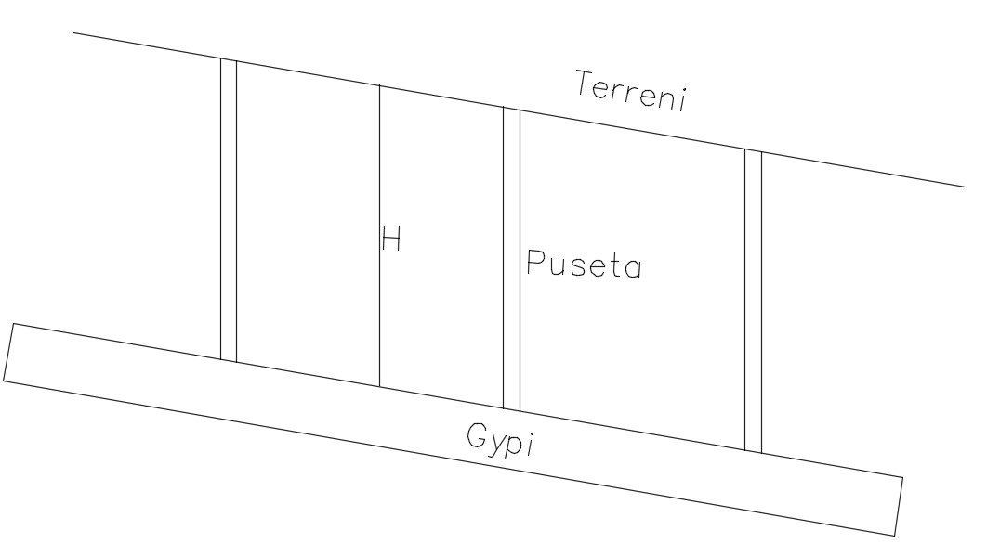

Qëllimi i kanalizimit atmosferik është që të bëhet largimi sa më i shpejtë dhe përmes rrugës më të shkurtër deri te impianti i trajtimit apo lumi.
Largimi i ujërave atmosferike mund të bëhet përmes rënies gravitacionale dhe pompave, në varësi nga konfiguracioni i terrenit.
Rrjeti i gypave të kanalizimit ndaj terrenit, ka tri pozita:
1. Pjerrtësia e gypave dhe e terrenit janë të njëjta

2. Pjerrtësia e gypave është më e vogël se e terrenit

Në këtë rast përdorim pusetat kaskadë, të cilat mundësojnë rënie konstante të gypit
3. Pjerrtësia e gypave është në kahje të kundërt me pjerrtësinë e terrenit
Kjo metodë, nuk preferohet sepse rrit koston e projektit. Duhet të përdoret vetëm nëse nuk ka zgjidhje tjetër.